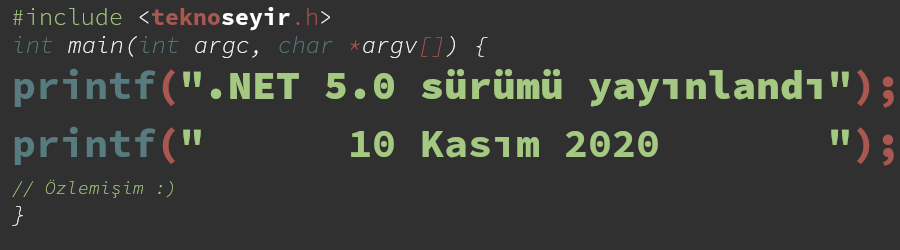

.NET 5.0 sürümü yayınlandı
10 Kasım 2020
İçindekiler

Geçtiğimiz sene düzenli olarak yazmaya çalıştığım Yazılım Gündemi yazılarını takip etmiş arkadaşlar .NET Framework ve .NET Core projelerinin artık tek bir isim altında ".NET 5.0" olarak devam edeceği haberini (bkz: Yazılım Gündemi - 22) hatırlayacaklardır. İşte o gün geldi. Bugün Microsoft, .NET 5.0 sürümünü yayınladı.
.NET SDK'sının bu sürümüyle birlikte C# 9 ve F# 5 sürümleri de hayatımıza girmiş bulunuyor. Visual Basic de SDK içerisinde mevcut fakat daha önceden de haberini yaptığım (bkz: Yazılım Gündemi - 2020/10) gibi artık geliştirilmeye devam edilmediği için dil değişikliği içermiyor. Visual Basic Application Framework tarafında birkaç iyileştirilme yapılmış o kadar. Visual Studio kullanıcılarının .NET 5.0'ı kullanabilmesi için Visual Studio 16.8 ya da daha üstü bir sürüme ihtiyaçları var. Visual Studio Code kullanıcıları için ise C# eklentisi zaten hali hazırda C# 9'u destekliyormuş.
Ayrıca bir sonraki .NET sürümü 6.0 için de şimdiden tarih verilmiş: Kasım 2021. Bundan sonra her Kasım ayında yeni bir büyük .NET sürümü gelecek diye de not düşmüşler. .NET 5.0 sürümü, .NET 6.0 sürümü yayınlandıktan 3 ay sonrasına kadar (Şubat 2022) desteklenmeye devam edilecek.
.NET Core'dan alışık olan arkadaşlar yadırgamayacaklardır (zaten uzun zamandır kullandıkları için) fakat .NET Framework kullanıcıları için ilginç bir gelişme olarak .NET 5.0 sürümü Windows, MacOS ve Linux tabanlı işletim sistemlerininde ve x86, x64, Arm32 ve Arm64 mimarilerinde destekli şekilde geliyor. Desteklenen tüm işletim sistemi ve mimariler için şu sayfayı inceleyebilirsiniz.
Şimdi bu sürümle birlikte gelen birkaç gelişmeye göz atalım isterseniz. Özellik başlıklarını Türkçe'ye çevirince anlam kaybı olduğu için İngilizce şekilde kullanacağım.
1 Top-level programs
C# ve diğer dillerden alışık olduğumuz yapının aksine artık C# 9.0 ile birlikte Python ve diğer betik dillerindeki gibi şu şekilde kod yazabileceğiz:
using System; var ad = "Eren"; var soyad = "Hatirnaz"; var suan = DateTime.Now; Console.WriteLine($"Merhaba {ad} {soyad}!"); Console.WriteLine($"Guncel tarih-saat: {suan}");
Yani artık main fonksiyonu tanımlamaya gerek yok. Daha gelişmiş bir örnek
için burayı inceleyebilirsiniz.
2 Records
Records için aslında yeni bir class türü diyebiliriz. Basit objeler tanımlamak için gerçekten ideal bir yapı sunuyor. Şöyle ki:
public record Kisi (string Ad, string Soyad, string Meslek, int Yas)
şeklinde tek bir satırda sınıfınızı tanımlayıp sonra da onu bu şekilde kullanabiliyorsunuz:
var eren = new Kisi { Ad = "Eren", Soyad = "Soyad", Meslek = "Back-End Developer", Yas = 25 };
Bu tarz basit tanımlamalar için oldukça sade bir kullanım sunuyor bence.
3 Logical and property patterns
Artık kontrol ifadelerimizi daha okuma diline yakın bir şekilde bu şekilde yazabileceğiz:
Console.WriteLine("Programdan cikmak istiyor musunuz? (e/H): "); var kullanici_tercihi = Console.ReadKey(); if (kullanici_tercihi.KeyChar is 'E' or 'e') { System.Environment.Exit(0); }
4 Windows Forms designer güncellendi
Visual Studio 16.8 sürümüyle birlikte içerisindeki Windows Form tasarlayıcı aracı de güncellenmiş. Artık tüm Windows Forms ve Telerik komponentlerini destekliyormuş. Bu zaten yıllardır Visual Studio içerisinde olan bir özellik değil mi? Ben uzun zamandır Microsoft teknolojilerinden uzak kaldığım için (ben en son .NET yazarken dolar 1.7 falandı :D) gelişmeleri o kadar net bilmiyorum. Neden bu yenilik olarak yazıya eklenmiş. Bilen arkadaşlar aydınlatsın beni lütfen.
5 Single file applications
İsminden de kolayca anlaşılabileceği gibi bu özellikle birlikte artık uygulamalarınızı tek bir çalıştırılabilir (executable) haline getirip, kullanıcılarınıza daha kolay bir şekilde ulaştırabileceksiniz. Bu özellik .NET Core 3.1 sürümüyle birlikte gelmişti fakat bu sürümle birlikte çalışma mantığıyla ilgili bazı değişiklikler yaparak çeşitli performans iyileştirmelerine gitmişler. İsmi bana son senelerde web tarafında çokça popülerleşen "Single Page Application" yaklaşımını hatırlattı :).
Oluşturabileceğiniz iki çeşit Single File Application var. Birisi framework'e bağımlı (kullanıcının bilgisayarında .NET 5.0 Runtime kurulu olmak zorunda) uygulama, diğeri de tamamen kendi başına çalışabilir uygulama. Tamamen kendi başına çalışabilen SFA içerisinde çalışması için gerekli araç setini ve tüm bağımlılıklarını içerdiği için boyutu büyük olacaktır. Yazdığınız bir programı SFA şeklinde paylaşmak için şu komutları kullanabiliyorsunuz:
- Framework bağımlı:
dotnet publish -r linux-x64 --self-contained false /p:PublishSingleFile=true - Tamamen kendi başına çalışan
dotnet publish -r linux-x64 --self-contained true /p:PublishSingleFile=true
6 Son sözler ve ileri okuma önerileri
Yazılım Gündemi yazıları yazmayı bitirdikten uzun bir zaman sonra ilk defa oturup tekrar böyle bir yazı kaleme alabildim. Açıkcası özlemedim desem yalan olur ama maalesef artık yazılım gündemini eskisi kadar sık takip edemiyorum.
Her neyse fazla nostalji duygusuna girmeden bu yazıyı da burada noktalamış olayım. Elimden geldiği ölçüde yayınlanan blog yazısı üzerinden dikkatimi çeken ve anlayabildiğim özellik ve değişiklikleri sizlere aktarmaya çalıştım. Diğer özellikler ve değişiklikler için Microsoft'un blogunda yayınlanan detaylı yazıyı okumanızı şiddetle tavsiye ederim. Eğer yanlış değerlendirdiğim ya da doğru hatırlamadığım kısımlar varsa lütfen beni düzeltmekten kendinizi geri koymayın.
Microsoft'un bugün yayınladığı .NET 5.0 sürüm hakkında siz ne düşünüyorsunuz? Özellikle .NET teknolojilerinde aktif çalışan arkadaşların bu sürüm hakkında yorumlarını okumayı çok isterim. Aktif projelerinizi hemen geçirmezsiniz büyük ihtimal ama yeni projelerde bunu tercih eder misiniz? Artıları ve eksileri nelerdir? "Şu sorunuma derman olacak özellikler geldi" dediğiniz bir şey var mı? Tüm bu soruları -dilerseniz- aşağıdaki yorumlar bölümünde cevaplayabilirsiniz.
.NET kod örnekleri için buraya tıklayabilirsiniz.
İleri Okuma Önerileri
7 Lisans

.NET 5.0 sürümü yayınlandı yazısı Eren Hatırnaz tarafından Creative Commons Atıf-GayriTicari-AynıLisanslaPaylaş 4.0 Uluslararası Lisansı (CC BY-NC-SA 4.0) ile lisanslanmıştır.